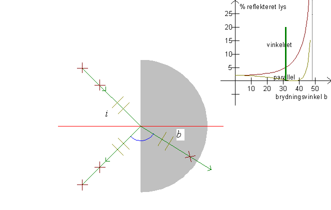
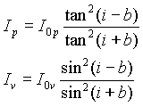
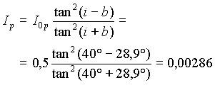
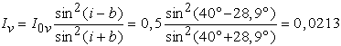
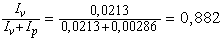
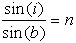
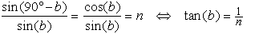
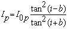
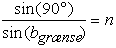

Når en stråle rammer en brydende flade, vil den brydes og spejles. Hvor meget der brydes og hvor meget der spejles afhænger af lysets polarisation. Lys er elektromagnetiske bølger, hvor det elektriske felt svinger på tværs af udbredelsesretningen. På »tværs« er mange retninger. (tænk f.eks. på en propel på et fly, den kan stå i mange retninger.)
Lys, hvor det elektriske felt svinger i planet bestemt af den indkomne solstråle og den spredte stråle, kaldes parallelt polariseret. Lys, hvor det elektriske felt svinger vinkelret på denne retning, er vinkelret polariseret. På figuren er parallelt polariseret lys markeret med to lysegrå parallelle linier og vinkelret polariseret lyse markeret med to mørkebrune kryds.
Man kan vise, at intensiteten af en reflekteret stråle er

hvor I0p står for intensiteten af det indkommende
parallelt polariserede lys, og I0v
for intensiteten og det indkommende vinkelret polariserede lys.
Graferne for disse funktioner er tegnet øverst til højre på
skærmen. Bemærk, at Ip
og Iv er tegnet som funktion af
brydningsvinklen b. Bemærk også, at for i + b
= 90° bliver Ip = 0 idet tan(i + b)
går mod uendelig, når
i + b går mod 90°.
Eksempel
En solstråle brydes fra luft ind i vand. Indfaldsvinklen er i = 40°. Idet brydningsindekset er n = 1,33 beregnes brydningsvinklen til b = 28,9°.
Vi sætter I0p = 0,5 og I0v = 0,5, herefter beregnes Ip og Iv for den reflekterede stråle. På figuren er Ip markeret med streg og Iv med et kryds.

Tilsvarende beregnes Iv:

Da lyset enten brydes eller spejles, fås intensiteterne Ip og Iv af den brudte stråle til
Ip = 0,5 - 0,00286 = 0,497 og Iv = 0,5 - 0,0213 = 0,478.
Vi ser, at hovedparten af lyset brydes, og at specielt det reflekterede lys er polariseret, idet

Går strålen den modsatte vej, vil en del af lyset reflekteres i vandet, men udregningerne er identiske med ovenstående udregninger!
Brewstervinklen:
Når i + b = 90°, er i = 90° - b, indsætter vi dette i brydningsloven:


Denne brydningsvinkel
kaldes Brewstervinklen. Ved Brewstervinklen forsvinder alt
parallelt polariseret lys, idet nævneren går mod uendelig i
udtrykket 
Grænsevinklen er bestemt
ved 
Formlerne gælder kun for b < bgrænse. For brydningsvinklen større end grænsevinklen reflekteres alt lys. (Ip = I0p og Iv = I0v)
Hvad er vinklen mellem den reflekterede stråle og den brudte stråle, når der ikke reflekteres noget parallelt polariseret lys?
Bemærk, at lysets elektriske felt sætter elektronerne i vandmolekylerne i svingninger og at det er disse svingninger, der er årsag til det reflekterede lys.
Hvorledes er en parallel svingning på tværs af den brudte stråle rettet i forhold til den reflekterede stråle, når der ikke reflekteres noget parallelt polariseret lys?
Samme spørgsmål for vinkelret polariseret lys.